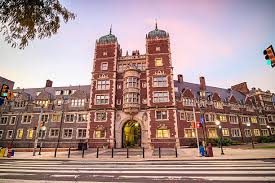
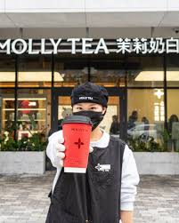

住在学校里面有什么好处
很多新生刚到宾大的时候，会先住在学校宿舍。住在学校里很方便，因为离教室、图书馆和餐厅都比较近。你不用每天花很多时间坐车，也更容易认识新同学。对刚来美国的留学生来说，住在学校里会轻松一点。

吃饭怎么办
宾大有学校餐厅，也有 meal plan。很多学生会在学校吃早饭、午饭或者晚饭。学校的 PennCard 很重要，因为你去一些学校地方、买东西或者吃饭的时候常常会用到。除了学校餐厅，University City 也有很多饭馆，附近也有不少好吃的中餐选择，比如 Mali 奶茶（茉莉奶白）、南翔小笼包，还有一家维吾尔面馆；而且校园里也有很多好吃的餐车，所以吃饭的选择很多。

下面这张地图整理了宾大附近常去的餐厅点位，方便你和同学按位置找吃饭的地方。
附近超市地图
买日用品和做饭食材时，常去的两个超市是 Heirloom Market 和 ACME。
PennCard 很重要
到了学校以后，最好早点办 PennCard。PennCard 是宾大的学生证，也是很重要的校园卡。你可以用它进一些学校楼，也可以用它使用一些学校服务。没有 PennCard 的时候，生活会不太方便，所以拿到以后要收好。
生病了怎么办
如果你在学校觉得不舒服，可以去 Student Health Services。学校网站说，这里给学生提供门诊服务。学校也要求很多学生参加学生保险，或者每年申请保险 waiver。所以来美国以前，最好先了解自己的保险情况。
学习和生活上有问题怎么办
在宾大，学生可以用很多资源帮助自己。Office of Student Affairs 可以帮助学生处理校园生活中的问题。Weingarten Center 可以帮助学生学习。要是你刚来美国，不太习惯新环境，也可以主动找学校老师或者工作人员帮忙。这样会让你更快适应。
收包裹和信件
住在学校宿舍的学生，平常也会收到信和包裹。Penn 的宿舍有收邮件和包裹的系统。学校网站也提醒大家，USPS 的包裹有时候会慢一点，而 UPS、FedEx、DHL 常常会更直接。所以下单的时候，要看清楚自己的地址，也要注意学校通知。